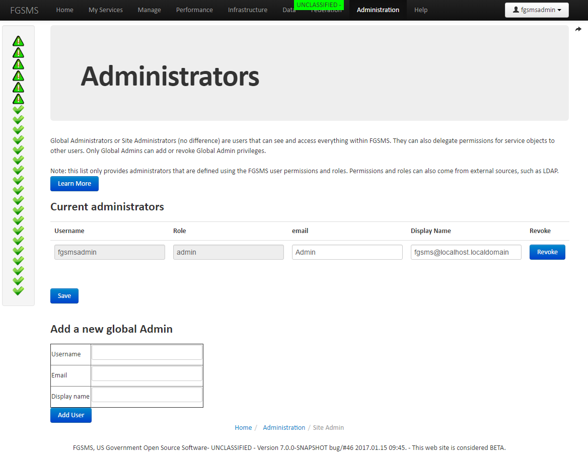
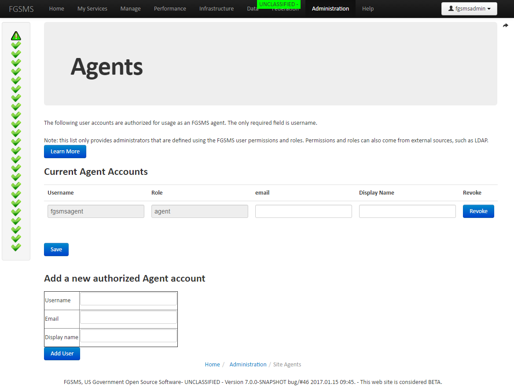

Goals of this article:
FGSMS’s server side components does not perform authentication. Instead it is delegated to the web application container (server) that FGSMS lives in. This is Apache Tomcat out of the box. There are many ways to configure Tomcat for authentication which are beyond the scope of this article.
FGSMS’s agents, specifically embedded agents that run outside of the server, do need to authenticate to the FGSMS server. They support the following authentication scenarios:
Embedded agents communicate to the FGSMS server using HTTP/XML/SOAP protocols and use the web service stack that is available to it. This stack is not necessarily known at runtime and can be any one of a number of different JAX-WS stacks. Tomcat, as well as many other containers, can support HTTP digest authentication as well as several other mechanisms. This method, unfortunately, is not universally support by all JAX-WS stacks, therefore digest is not used by FGSMS.
FGSMS has three roles, “admin”, “agent” and (blank). The field of “role” was intentional left open ended to allow for future expansion. Global administers can perform any action as well as delegate permissions to any user. By default, only global administrators have access to newly discovered services. Permissions can then be delegated to other users for viewing or modifying service policies, as well as for anonymous users.
To change the Global Administrators, go to Administration > Site Administrators

To change the accounts that are used for Agents, go to Administration > Site Agents

Simply enter the username (case sensitive) or if using CAC/PKI, the Distinguished Name of the Subject that the certificate was issued to.
Agents collect data for FGSMS and then report back to FGSMS (centralized server running the services war). Agents have some special provisions to enable automatic registration and to able to put data into the database. If there was no authentication, someone could easily register a large number of fictitious services causing DOS attack. It’s also possible to inject false transaction data which could, in theory, cost someone money (assuming that the SLA’s are tied to some kind of monetary reward/penalty system).
So agents need to authenticate themselves to the server. They follow the same rules as anyone else, username/password OR a PKI certificate. In addition, those usernames/certificate identities must be explicitly added to the role list for agents.
FGSMS has four permission levels that are defined on a per service, per user level. This enables further delegation of duties as well as enables exposing the the web user interface to the general populous, ensuring that only authorized users and view and perform actions.
| Right | Permission |
|---|---|
| Read | The user can read permissions and performance statistics for a service. |
| Write | The user can read and make changes to the service policy for a service. |
| Audit | The user can read, make changes to the service policy and view message transaction logs. |
| Administer | The user can read, make changes to the service policy, view message transaction logs and delegate and change permissions for this service. |
By default, when a new service is registered, only Global Administrators will have access to delegate permissions to other users. Service policies however can be read for ANY service for any authenticated user.
To change the permissions for a specific service, bring up the Policy Editor for the specific service, then click on “View Permissions”.
Simply enter the username (case sensitive) or if using CAC/PKI, the Distinguished Name of the Subject that the certificate was issued to.
FGSMS now includes support for the “everyone” user account. This is similar in behavior to the Microsoft Active Directory “everyone” account. Esscentially, if permissions are not granted to a specific user, the “everyone” account is then checked. If permissions are granted to the “everyone” account, then permissions will be processed accordingly.
Important Note: Roles can either be defined within FGSMS’s database OR from the application server identity provider. This means that Roles can be translated from group membership in a LDAP or Active Directory.
| Role | Role Name from Container | Role name from database | Description |
|---|---|---|---|
| Global admin | FGSMS_GLOBAL_ADMINISTRATOR | admin | Total control of FGSMS |
| Global audit | FGSMS_GLOBAL_AUDITOR | audit | Can view message logs, read, and write changes to all monitored components. Cannot make changes to globally defined settings. Cannot define SLA Run Script actions |
| Global write | FGSMS_GLOBAL_WRITE | Can view and write changes to all monitored components. Cannot define SLA Run Script actions | |
| Global read | FGSMS_GLOBAL_READ | Can view all monitored components | |
| Agent | FGSMS_GLOBAL_AGENT agent | Can add new data to the system. Can update/set the status of monitored components. |
Information Assurance Note: The permission structure of FGSMS is important to understand.
Great question. It is enforced as the service level, specifically in fgsmsServices.war. The user interface has very little logic in it in terms authentication and no logic for authorization. This enables you to put the user interface on a separate application server than the web services war.
It depends on the auth mode.
At the logon screen, the password is first verified by transfering it to the web app server running the user interface. The user interface then attempts to access the FGSMS services using the provided credentials. If the service callout is successful, the credentials are encrypted with a random AES256 bit and stored in the session object.
The user’s browser hits the user interface and is challenged for a certificate. After selection, the web app server running the user interface validates that it is a trusted and valid certificate. From there, the user interface authenticates to the web app container hosting the FGSMS services using the user interface server’s certificate with authentication. During this call, a custom HTTP header is appended which contains the user’s selected certificate’s common name. On the service side, a custom authenticator runs to make sure that the SSL session certificate was from a known trusted entity for user identity delegation (the web user interface). Assuming that checks out, the session (on the service side) is then changed to the user’s identity. Access control rules are then processed from there. This is sometimes known as the double hop authentication scenario.
It is possible to use LDAP or an Activity Directory type of user store for password management and authentication and it is possible to link an LDAP defined Group to a FGSMS Role.
This is configured using web.xml within fgsmsServices.war. [Working with Security Roles[(http://docs.oracle.com/javaee/5/tutorial/doc/bncav.html) is a good article to get the gist of it.
Basically, you need to tell your container to abou the LDAP server, which is usually a global setting. (Tomcat is server.xml). Then you modify the web.xml in FGSMSServices.war.
<security-role>
<description/>
<role-name>everyone</role-name>
</security-role>
<security-role>
<description/>
<role-name>FGSMS_GLOBAL_ADMINISTRATOR</role-name>
</security-role>
<security-role>
<description/>
<role-name>FGSMS_GLOBAL_AUDITOR</role-name>
</security-role>
<security-role>
<description/>
<role-name>FGSMS_GLOBAL_WRITE</role-name>
</security-role>
<security-role>
<description/>
<role-name>FGSMS_GLOBAL_READ</role-name>
</security-role>
<security-role>
<description/>
<role-name>FGSMS_GLOBAL_AGENT</role-name>
</security-role>
<security-role-mapping>
<role-name>FGSMS_GLOBAL_ADMINISTRATOR</role-name>
<group-name>CN=Group Name, DC=my,DC=company,DC=com</group-name>
</security-role-mapping>
FGSMS uses two different mechanisms to control access to the data and functions within the system, role based access control (RBAC), and access control lists (ACLs).
Roles:
Access Control Lists
The following tables describes what permissions are required for each method of each service
| Method | Required Permissions |
|---|---|
| getDataCollectorList | Global Admin |
| getServiceHostList | Global Admin |
| getAllOperationalStatusLog | Anyone, results are filtered |
| getSLAFaultRecords | Read access based on query url |
| getMonitoredServiceList | Anyone, results are filtered |
| getOperationalStatusLog | Read access based on query url |
| getMessageTransactionLog | Audit access based on the query url |
| getMessageLogsByRange | Audit access based on the query url |
| getPerformanceAverageHostingStats | Global Admin |
| getPerformanceAverageStats | Read access based on the query url |
| getMessageTransactionLogDetails | Audit access based on the query url |
| getPerformanceAverageStatsAll | Anyone, results are filtered |
| getRecentMessageLogs | Global admin if the url is not defined, audit otherwise |
| getAlerts | Anyone, results are filtered |
| purgePerformanceData | Admin |
| getAuditLog | Global Audit |
| getBrokerList | Anyone, results are filtered |
| getCurrentBrokerDetails | Read access based on query url |
| getHistoricalBrokerDetails | Read access based on query url |
| getHistoricalTopicQueueDetails | Read access based on query url |
| getAgentTypes | Global Admin |
| getThreadTransactions | Read access based on query url |
| getQuickStats | Read access based on query url |
| getQuickStatsAll | Anyone, results are filtered |
| getAuditLogsByTimeRange | Global audit |
| getMostRecentMachineDataByDomain | Global admin |
| getMostRecentMachineData | Read access based on query url |
| getMostRecentProcessData | Read access based on query url |
| getMachinePerformanceLogsByRange | Read access based on query url |
| getAllMostRecentMachineAndProcessData | Global admin |
| getProcessPerformanceLogsByRange | Read access based on query url |
| deleteServiceDependency | Write access |
| getAllServiceDependencies | Global admin |
| getServiceDependencies | Read access based in query url |
| getOperatingStatus | All authenticated users |
| Method | Required Permissions |
|---|---|
| getServicePolicy | Read access, or with Agent role, |
| getUDDIDataPublishServicePolicies | Agent role |
| setServicePolicy | Write access based on query url |
| getGlobalPolicy | Anyone |
| deleteServicePolicy | Write access based on query url |
| setServicePermissions | Admin access based on query url |
| getServicePermissions | Audit access based on query url |
| getAdministrators | Anyone |
| setAdministrator | Global Admin |
| removeGeneralSettings | Global Admin |
| setCredentials | Write access based on query url |
| getAgentPrinicples | Global Admin |
| removeGeneralSettings | Global Admin |
| getMailSettings | Global Admin |
| clearCredentials | Write access based on query url |
| getDomainList | Global Admin |
| getProcessesListByMachine | Global Admin |
| getMonitoredItemsByMachine | Global Admin |
| getOperatingStatus | Anyone |
| registerPlugin | Global Admin |
| unregisterPlugin | Global Admin |
| getPluginList | Anyone |
| getPluginInformation | Anyone |
NOT YET IMPLEMENTED
| Method | Required Permissions |
|---|---|
| addData | Agents |
| addMoreData | Agents |
| addStatisticalData | Agents |
| addMachineAndProcessData | Agents |
| getOperatingStatus | Anyone |
| Method | Required Permissions |
|---|---|
| exportDataToHTML | Anyone data is filtered by access rules, certain report types require global admin |
| exportDataToCSV | Anyone data is filtered by access rules, certain report types require global admin |
| Method | Required Permissions |
|---|---|
| getMyScheduledReports | Anyone, data is filtered by user rights |
| addOrUpdateScheduledReport | Anyone, data is filtered by user rights |
| deleteScheduledReport | Anyone, data is filtered by user rights |
| getReport | Anyone, data is filtered by user rights |
| deleteReport | Anyone, data is filtered by user rights |